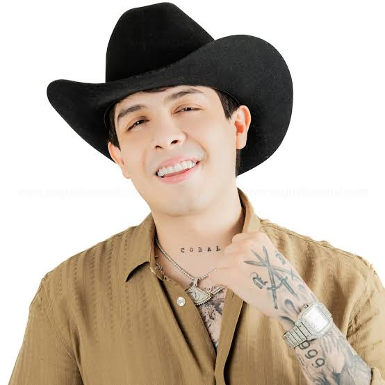
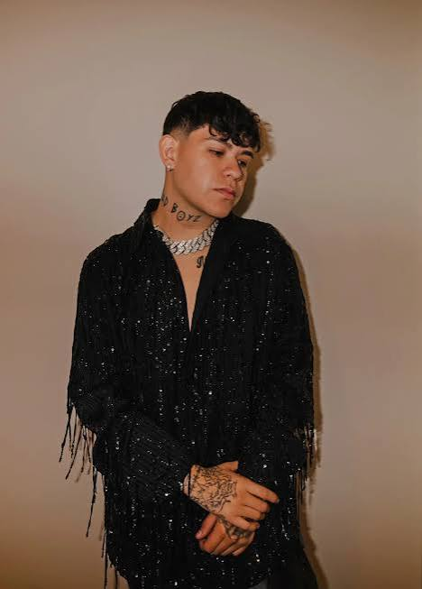

| foto | cancion | letra | video |
|---|---|---|---|
| Rio | Hoy le doy gracias al cielo
Por las veces que me equivoqué y porque te encontré Me devolviste la fe Me presentaste a Cupido y ahora parcho con él El brillo de los ojos se me nota Y los que me conocen saben que me curé Porque ahora ando en otra He dejado el whisky por usted ¿Pa' qué buscar en la calle lo que abunda en mi casa? Una mamacita buena gente, qué chimba de cuerpo y de cara Y aunque la baby es inocente y con otras se compara Diosito la hizo humilde, pero yo la veo bien cara A punta de tener el cora' para un paramédico Tú me lo cogiste y lo pusiste energético Lo de nosotros va más allá de lo estético De lo erótico y también de lo frenético Yo fui ese hoodie que te quitó to' el frío Tú fuiste la cura cuando estaba despechado Y desorientados encontramos un río Y ahora ya no andamos por el rumbo equivocado Yo fui ese hoodie que te quitó to' el frío Tú fuiste la cura cuando estaba despechado Y desorientados encontramos un río Y ahora ya no andamos por el rumbo equivocado ¿Pa' qué buscar en la calle lo que abunda en mi casa? Una mamacita buena gente, qué chimba de cuerpo y de cara Y aunque la baby es inocente y con otras se compara Diosito la hizo humilde, pero yo la veo bien cara El VIP ahora es en casa contigo Y hacerte el amor después de la chamba Mi plan favorito, y una playlist de clásicos Pa' que no nos escuchen los vecinos Quedarme con ese recuerdo de lune' a domingo De lune' a domingo El brillo de los ojos se me nota Y los que me conocen saben que me curé Porque ahora ando en otra He dejado el whisky por usted ¿Pa' qué buscar en la calle lo que abunda en mi casa? Una mamacita buena gente, qué chimba de cuerpo y de cara Y aunque la baby es inocente y con otras se compara Diosito la hizo humilde, pero yo la veo bien cara Yeah Te amo, tú sabe' Para que tengan su pareja y se la disfruten Y que no busquen en la calle lo que no se les ha perdido Yeah J Balvin, man Latino Gang-Gang Leggo |
https://youtu.be/vuddlpgY5J4?si=C604n0gadmAnyXnQ | |
| rafa caro | Cómo pasaron los años pero sé muy bien
Mi nombre han escuchado También deben de saber De todas las hazañas que este hombre ha logrado Que por los años 80 yo era el encargado Del mundo del narco Y que formé un gran imperio que hasta la fecha Aún sigue dando Voy a presentarme Mi nombre es Rafael Caro Quintero Pregúntenle a sus abuelos Yo sé que más de alguno me escuchó en el noticiero Soy considerado el narco de narcos Y el número uno Soy de Sinaloa, proveniente de la Noria Y pa' todo el mundo La cárcel no es pa' siempre Como lo aclaré en aquella entrevista Bien recuerdo las preguntas Que me estaba haciendo aquella señorita Yo no conseguí lo que alcancé a tener Fácil como ella decía Creo que le quedó bien clara la respuesta que le di Nada es fácil en la vida Hoy el tiempo ha pasado, la tormenta terminó Pienso hacer muchas cosas Arrepentido jamás, lo hecho, hecho está Así se escribió la historia Me relacionaron con la muerte De un agente de la DEA Creo que están equivocados, como dice aquel corrido Yo no maté a Camarena Mi sentencia se cumplió, después de veintiocho años Hoy salgo por la puerta Fue bastante tiempo para pensar bien las cosas Vengo con más experiencia Hoy mi pelo ya no es negro pues también cambió De canas se ha pintado Aunque estoy un poco viejo, sigo haciendo bien las cosas Siempre lo he demostrado Ya me voy a despedir Respiro al aire libre, hoy estoy muy contento Visitaré a mi familia, tengo mucho que contarles Tengo ganas de verlos Don Rafa ya salió y viene con todo Su legado sigue activo Su apellido es Caro y el señor sigue siendo Muy seguro de sí mismo |
https://youtu.be/CiRBP1alNJw?si=7R-8TNU6miZTX_z6 | |
| felices los 4 | Maluma, baby
Apenas sale el sol y tú te vas corriendo Sé que pensarás que esto me está doliendo Yo no estoy pensando en lo que estás haciendo Si somos ajenos Y así nos queremos (Rudeboyz) Si conmigo te quedas O con otro tú te vas No me importa un carajo porque sé que volverás Si conmigo te quedas O con otro tú te vas No me importa un carajo porque sé que volverás Y si con otro pasas el rato Vamo' a ser feliz, vamo' a ser feliz Felices los cuatro Te agrandamo' el cuarto Y si con otro pasas el rato Vamo' a ser feliz, vamo' a ser feliz Felices los cuatro Yo te acepto el trato Y lo hacemos otro rato Y lo hacemos otro rato Y lo hacemos otro rato Y lo hacemos otro rato (alright, alright, baby) Y lo hacemos otro rato Lo nuestro no depende de un pacto Disfruta y solo siente el impacto El boom-boom que te quema, ese cuerpo de sirena Tranquila que no creo en contratos (y tú menos) Y siempre que se va, regresa a mí (y felices los cuatro) No importa el qué dirán, nos gusta así (te agrandamos el cuarto, baby) Y siempre que se va, regresa a mí (y felices los cuatro) No importa el qué dirán, somos tal para cual Y si con otro pasas el rato Vamo' a ser feliz, vamo' a ser feliz Felices los cuatro Te agrandamo' el cuarto Y si con otro pasas el rato Vamo' a ser feliz, vamo' a ser feliz Felices los cuatro Yo te acepto el trato Y lo hacemos otro rato Y lo hacemos otro rato Y lo hacemos otro rato Y lo hacemos otro rato Si conmigo te quedas O con otro tú te vas No me importa un carajo porque sé que volverás Si conmigo te quedas O con otro tú te vas No me importa un carajo porque sé que volverás Y si con otro pasas el rato Vamo' a ser feliz, vamo' a ser feliz Felices los cuatro Te agrandamo' el cuarto Y si con otro pasas el rato Vamo' a ser feliz, vamo' a ser feliz Felices los cuatro Yo te acepto el trato Y lo hacemos otro rato Y lo hacemos otro rato Y lo hacemos otro rato Y lo hacemos otro rato Y siempre que se va, regresa a mí (Maluma, baby) No importa el qué dirán, nos gusta así Kevin ADG, Chan El Genio (Rudeboy z) Y siempre que se va, regresa a mí El código secreto, baby No importa el qué dirán (Ily Wonder) Somos tal para cual Así lo quiso el destino, mami Muaaa |
https://youtu.be/t_jHrUE5IOk?si=7cbugHtJQvHd3VtF | |
 |
voy llegando a tu ciudad | Voy llegando a tu ciudad
Ya no puedo esperar más tiempo para verte Es que mata la ansiedad Me muero por mirar esos ojitos verdes Me saldré de la rutina y giraré mi vida Para que tú estés en ella como debe ser Yo sé que eres conocida Que varios te tiran, pero no merecen Y dile ya a tus amigas Que no te presenten con más pequeñeces Aquí estoy, no dejaré que se te acerque Nadie, porque solo yo tendré el candado del amor Mil y un besos para dar Ya estando en tu ciudad, no habrá quien lo detenga Si las copas van de más Vayamos a un lugar y cerremos las puertas Entre alcohol y besos, se va incrementando El fuego en esa habitación, ya no mires más el reloj Única por donde vas Me curas tú mi mal, moviendo tu silueta No hay otra que te sea igual Te ves tan especial, por eso, es que me tientas Aquí estoy, no dejaré que se te acerque Nadie, porque solo yo tendré el candado del amor |
https://youtu.be/PITZG41X2Vs?si=7u-Aq4ocKpbAiLlj |
 > |
cologne | Ey
Ey, ey, ey
Eh, eh
¡Ya!
Ya no puedo verte (nah) Una vez mas me falló la suerte (uh oh) Yo me fui y me alejé de ti (uh uh, de ti) Yo sabia que esto no era para mí (yah) Anda, dime, esto es un "come y vete" (es un "come y vete") Ya no llores porque nada sientes (nada) Aunque por dentro me mira, pero en fin Solo quieres divertirte y no es así Y hoy, cuando la noche caiga y ya no esté yo Las llamadas que entran se van pa'l buzón Baby, cómo dañaste mi corazón Pero es tarde, ya no tengo ganas Estoy, que a mí me lleva mientras corre el reloj Mentí, las fotos aún están en mi phone Como tonto me huelo todo el cologne Baby, que siempre tú te llevabas ¿Ves? Yo lo sabia que si te creía, caía otra vez, yeah Cambié de cel, por si llamas no tenerte que responder Me la paso oliendo esa colonia, así te puedo volver a ver Que éramos diferente', eso pensé Pero es un "come y vete", ya lo sé Prendo uno pa' olvidarte, pero cuando fumo el humo me recuerda a ti De todas las veces que te hice mía mientras lo prendía, eso me hacia feli' Ahora la cama vacía me hace compañía porque tú no está' aquí Yo no sé ni pa' que creí en ti, el amor no existe, contigo aprendí Y hoy, cuando la noche caiga ya no esté yo Las llamadas que entran se van pa'l buzón Baby, cómo dañaste mi corazón Pero es tarde, ya no tengo ganas Estoy, que a mí me lleva mientras corre el reloj Mentí, las fotos aún están en mi phone Como tonto me huelo todo el cologne Baby, que siempre tú te llevabas ¿Cómo te fue, cómo te va? Ni yo me entiendo, mija, la verdad (uh) Vi que llamaste en la madrugada (uh) Cómo se siente fría hasta tu cama, llégale (yah, yah) A lo mejor y me extrañas, llámame Mirémonos mañana, ándale No nos vemos mañana, perdóname Pero hay veces que recuerdo que tú no das más por mí Si yo sigo aquí pensando como al diablo conocí To'a la madrugada, tus fotos, mirarlas Dime que me extrañas, pierdo el control y caigo en tus mangas Chiquita, ya llegamos justo al fin (al fin) Nos vamos despidiendo todo el fin (todo el fin) No te extrañaré, lo juro al fin Se irá todo el dolor, confía en mí Y si nos volvemos a ver (una vez ma') Cantando en la barra, aquel (aquella barra) Ese puto verso, te ame No lo valoraste, ¿por que? (¿Por qué, por qué?) Y hoy, y cuando la noche caiga y ya no esté yo (yeah) Las llamadas que entran se van pal' buzón (yo, es Junior H, Ovi) Baby como dañaste mi corazón (la letra muda) Pero es tarde, ya no tengo ganas (dímelo Krizous, Junior H) (No, no, no) (Yeah, habla mix) |
https://youtu.be/SzzdXRanWsk?si=DlS99yxjW-K7YmeJ |